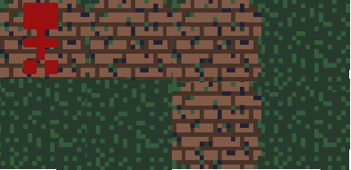

This little friend is you.
Unfortunately, you're all alone in the dark forest and a little bit lost too.
Your goal is to navigate your way down the old path and out of the forest. (Stay off the grass though!)

One problem -- it's dark and your lantern can only let you see so far away.
You lost your map, so you'll have to guess a little bit on where the path is.
So every step you venture out to look for an escape, you'll discover a little bit more of the path. Eventually, you'll see the way out.
The way you walk is a little unique. It's a lot less exhausting of a journey when you know where you're going before you step. For example, it's way
easier for you to walk five steps forward than to walk a step forward and then walk a step forward and then walk a step forward and then walk a step
forward and then walk a step forward.
Your map updates as you discover, so you can gradually go farther. The dark forest is kind of safe for a lonely traveler, but it's not somewhere you want to be stuck.
Good luck on your journey home!